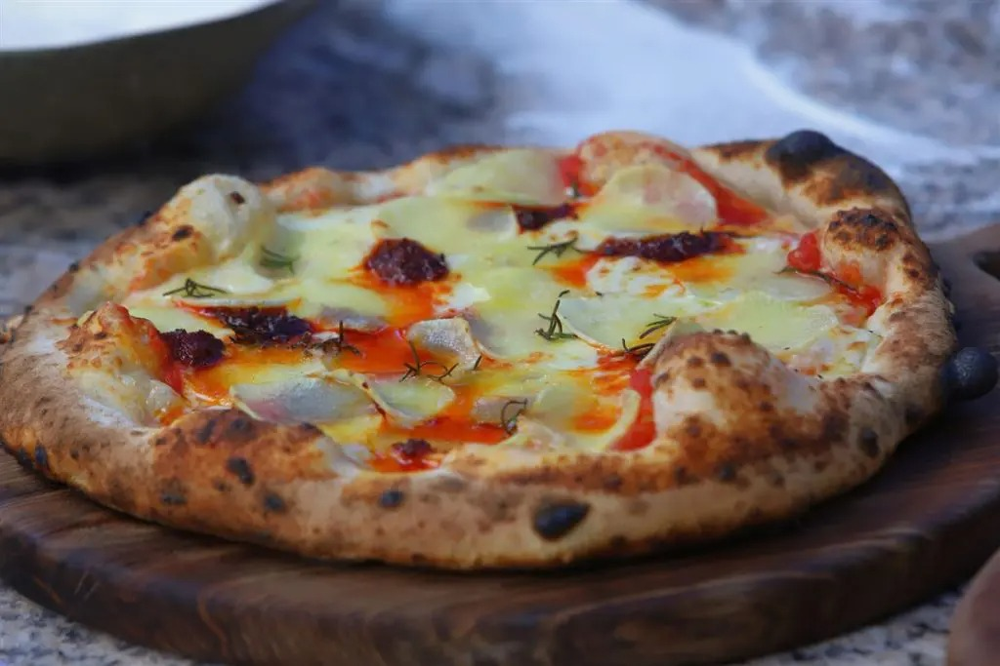

Pizza Napolitana

La pizza napolitana, de masa tierna y delgada pero bordes altos, es la versión propia de la cocina napolitana de la pizza redonda.
El término pizza napoletana, por su importancia histórica o regional, se emplea en algunas zonas como sinónimo de pizza tonda (‘pizza redonda’).
Bajo la denominación pizza napoletana verace artigianale (‘pizza napolitana auténtica artesanal’) está reconocida como producto agroalimentario tradicional italiano.
Ingredientes:
Para la masa:
- Sal: 13 gramos.
- Agua: 350 c.c.
- Harina: 500 grs.
- Levadura Seca: 5 grs.
Para los toppings:
- Muzarella: 250 grs.
- Crema: 200 c.c.
- Pesto: c/n.
- Queso ahumado: c/n.
- Tomates secos hidratados: c/n.
- Zapallo horneado: 150 grs.
Pasos:
Masa:
- En un bowl mezclar agua, sal y disolver.
- Añadir levadura seca, revolver e incorporar harina.
- Trabajar con las manos hasta integrar los ingredientes sin amasar.
- Dejar reposar tapada por 20 minutos y retirar del bowl y amasar hasta formar un bollo liso.
- Dejar levar en bowl tapado por 90 minutos.
- Transcurrido el tiempo dividir en 3, formar bollos y colocar en placa con harina en la basetapado con papel film.
- Dejar levar en heladera por 24 hs.
- Retirar el bollo y espolvorear con semolín.
- Con los dedos de afuera hacia el centro marcar el borde sin apretarlo.
Toppings:
- Dar forma a la pizza y colocar en la superficie crema, muzarella rallada, zapallo asado, tomates secos hidratados, queso ahumado rallado y terminar con hilos de pesto.
- Cocinar en horno de barro a 450° C por 90 segundos girándola a mitad de cocción.